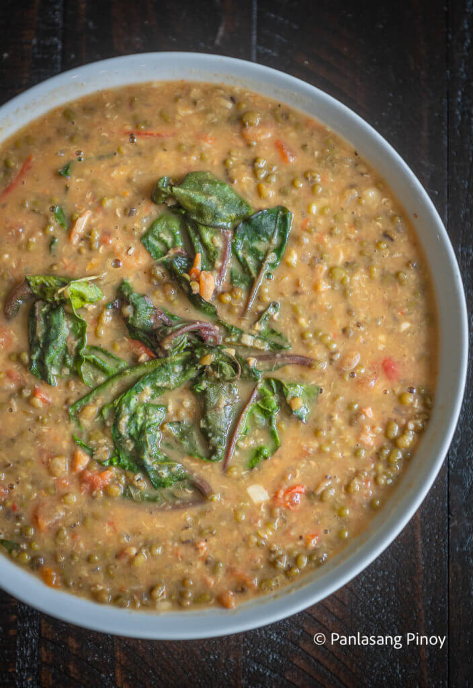

Ginisang Monggo Recipe

Description
Sauteed mung beans with spinach. This simple and healthy dish is perfect to have during rainy or cold weather. Serve it with rice and fried fish on side.
Ingredients
- 1 1/2 cups Mung beans
- 1 tbsp garlic
- 1/2 lb pork
- 2 cups spinach (or alugbati)
- 1 piece tomato chopped
- 1 piece onion chopped
- 8 pieces shrimp optional
- 2 tablespoons fish sauce
- 24 ounces water for boiling
- 1 piece Knorr beef cube for flavoring
- 1/2 cup crushed pork rind chicharon
- 1/4 teaspoon ground black pepper
Steps
- In a pan, put-in the water and bring to a boil
- Put-in the Mung beans and simmer until becomes soft (about 35 to 50 minutes)
- On a separate pan, sauté the garlic,onion, and tomato
- Add the pork. Cook for 5 mins
- Put-in the beef cube and fish sauce. Simmer for 10 mins or until the meat is tender. Note: If necessary, you may add water to help make the meat tender but make sure to add more time to simmer
- Add the shrimp. Stir and then cook for 2 minutes.
- Pour the cooked Mung beans. Stir and then simmer for 10 minutes
- Add the spinach and pork rinds (chicharon)
- Sprinkle the ground black pepper
- Serve hot. Share and Enjoy!